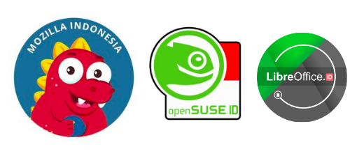

git init
Sage M. Abdullah
intro
- Computer Science student at Universitas Indonesia
- DSC Universitas Indonesia 2019 Lead
- Open source enthusiast
- Google Code-In 2016 participant
- Google Summer of Code 2019 student with Django Software Foundation
outline
- Version Control System (VCS)
- Git
- Open source
have you ever used...
have you ever used...
- Google Docs
- WordPress
- Wikipedia
- Anything with an undo feature


ctrl+zversion control system
version control system
Manages changes to collections of information.
version control system
Manages changes to collections of information.
- Documents
- Large web sites
- ...computer programs!
version control system
Manages changes to collections of information.
- A set of changes (revision) has an ID, e.g. “revision 1”, “revision 2”.
- Revisions can be compared, restored, and merged.
- Revision information is stored in a data structure called repository.
version control system
- Subversion (SVN)
- BitKeeper
- Mercurial
- Git
medium.com/faun/centralized-vs-distributed-version-control-systems-a135091299f0
medium.com/faun/centralized-vs-distributed-version-control-systems-a135091299f0
git

git
- Distributed version control system
- Free and open source
- Started in April 2005
- Created by Linus Torvalds to aid Linux development
git init
git init
- Initialize an empty git repository
- Stored in
.gitdirectory
git status
git status
- Show the working tree status
- Very useful to see what's going on in the repo
let's add something!
let's add something!
- Create a README file for your repository
- Give general information about the repository
- Usually (not always) using the Markdown (.md) format
git add
git add
- Add files to the index (staging area)
git add file1 file2 ...- Start tracking those files
git commit
git commit
- Record changes to the repository
- Create a new revision, or commit
git commit -m "Your commit message here"
git commit
- Before that, you need to configure your username and email
git config user.name "Your Name"git config user.email "myemail@provider.tld"- Use the
--globalflag to make it the default.
git commit
Why is that needed?
Git uses SHA1 hash to refer to commits. It's generated based on:
- The source tree of the commit
- SHA1 hash of the parent commit
- The author info (+ timestamp)
- The committer info (+ timestamp)
- The commit message
gist.github.com/masak/2415865
auth0.com/blog/hashing-passwords-one-way-road-to-security/
workflow in git
try repeating it!
- Introduce more changes in the working directory
- Edit existing (tracked) files, create new files, delete files
- Add them to the staging area
git add file1 file2 ...- or just
git add . - Commit!
git commit -m "Update something"
git log
git log
- Show commit logs
- See history of the repository
how git stores commit
but it can be more complex than that...
how git stores commit
stackoverflow.com/a/24107223stackoverflow.com/a/9074343
how git stores commit
git branch
Things get more interesting with branches.
However, before that...
So far, we’ve only worked with git repositories locally.
if you're collaborating...
...how do you share your code?
❌
if you're collaborating...
...how do you share your code?

✔️
let's push our repo!
let's push our repo!
git remote && git push
git remote && git push
- Add the remote repository URL to your local repository
git remote add origin https://git{hub,lab}.com/...- Push!
git push -u origin master
Remote name is usually origin.
Default branch is master.
voila!
git clone
git clone
- Clone a repository into a new directory
git clone https://git{hub,lab}.com/...- Creates remote-tracking branches
- Creates and checks out the remote’s currently active branch
git pull
git pull
- "download" changes that someone has pushed
- Opposite of push -> pull
git pull origin master
open source projects
open source projects
The source code of an open source software should be released under a license in which the copyright holder grants users the rights to study, change, and distribute the software to anyone and for any purpose.
open source projects
- There are millions of projects on GitHub
- Most of them are open source projects
- Including your favorite technologies (e.g. framework, languages, etc.)
- They aren't perfect: bugs, feature requests -> issues are open
- They're waiting for your contribution! üòÑ
open source projects
contributing to open source
contributing to open source
- Start small
- Use them!
- Submit bug reports, issues, and feature requests on their issue tracker
- Release your personal projects under an open source license
- Submit patches
- Fix typos and bugs, add new features, etc.
- How?
contributing to open source
- Identify the issue to fix
- Fork the repository
- Create a new branch on your repository
- Apply your patches
- Create a new Pull Request from your branch
contributing to open source
contributing to open source

contributing to open source
contributing to open source
contributing to open source
Thank you!
Thank you!
{
"name": "Sage M. Abdullah",
"slides": {
"hosted": "https://slides.laymonage.com/",
"source": "https://github.com/laymonage/slides-git-init"
"license": "https://creativecommons.org/licenses/by/4.0"
}
}